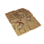
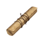
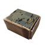

-
ABOUT
 This site is a collection of facts and theories surrounding the Pathologic series -
STORY
 Learn about the three campaigns in the story of Pathologic -
CHARACTERS
Learn about the various characters inhabiting the Town-on-Gorkon -
ITEMS
 Find out what all the items do and what they may mean